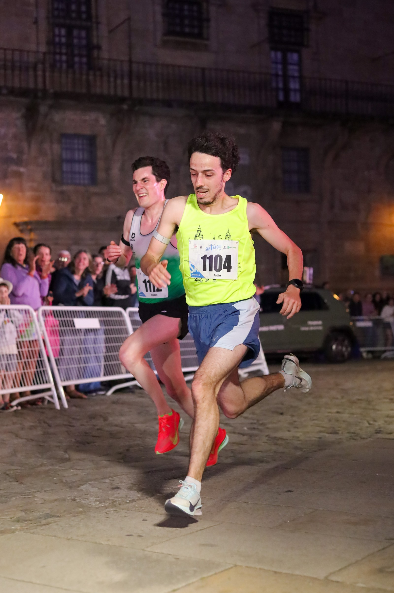
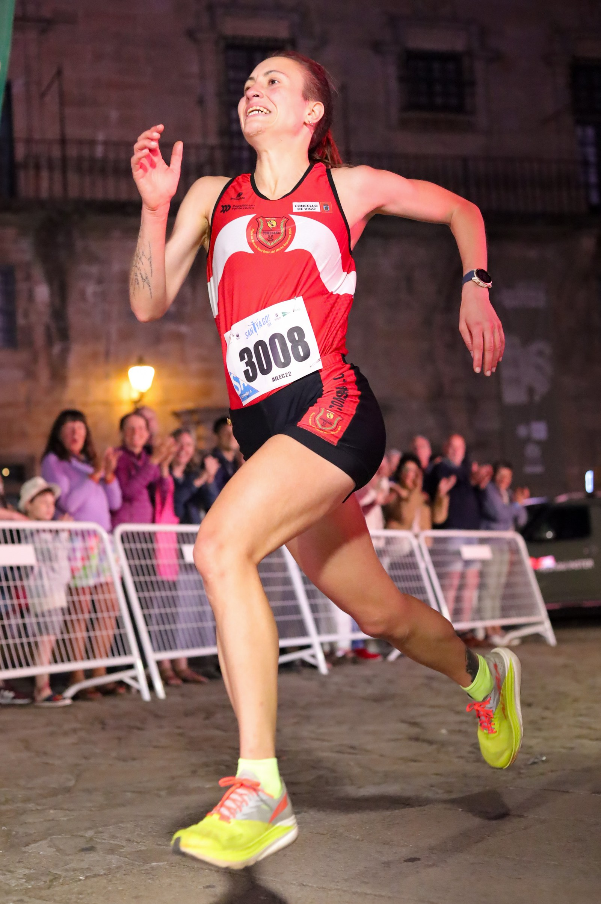

Santiago de Compostela's old town turned out on Saturday 30 May 2026 for the tenth Carreira Nocturna SantYaGo10K, with event coverage by the Image Media team. Organised by Club Atletismo Fontes do Sar together with the Concello de Santiago's Departamento de Deportes and the Federación Galega de Atletismo, the night race set off from San Francisco at 22:00 on an RFEA-homologated 10km course with a maximum elevation gain of just 53 metres, winding through the city's emblematic streets — with music and ambient entertainment staged in plazas along the way — before finishing in front of the cathedral at Praza do Obradoiro. Organisers expanded this year's capacity to 2,000 registered runners, an increase of 500 on the previous edition.

Workneh Fikire Serbessa of Club Atletismo Narón won the men's race in 31:03, while Eva Piñel Lorenzo of Club Deportivo Delikia took the women's win in 36:27, according to the final classification published by the Federación Galega de Atletismo. More than 600 runners were classified across the course, with cash prizes and trophies awarded in the absolute and age-category divisions.

The SantYaGo10K again ran as a solidarity race, with proceeds from entry fees and an optional "dorsal 0" donation supporting Aspanaes, the association for families of people with autism spectrum disorder in the province of A Coruña. Organisers also presented a special award for the oldest participant, honouring the late Cándido Calvo.
The Image Media coverage team at the SantYaGo10K comprised Felipe Albano, Eduardo Pereira, Jose Salgueiro and Luciano Inocencio.